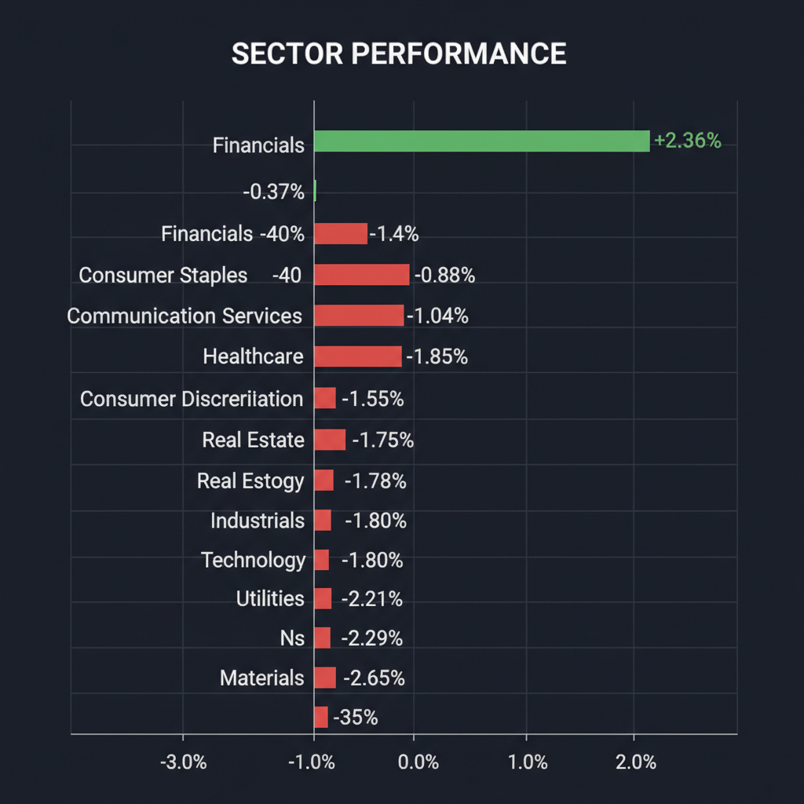
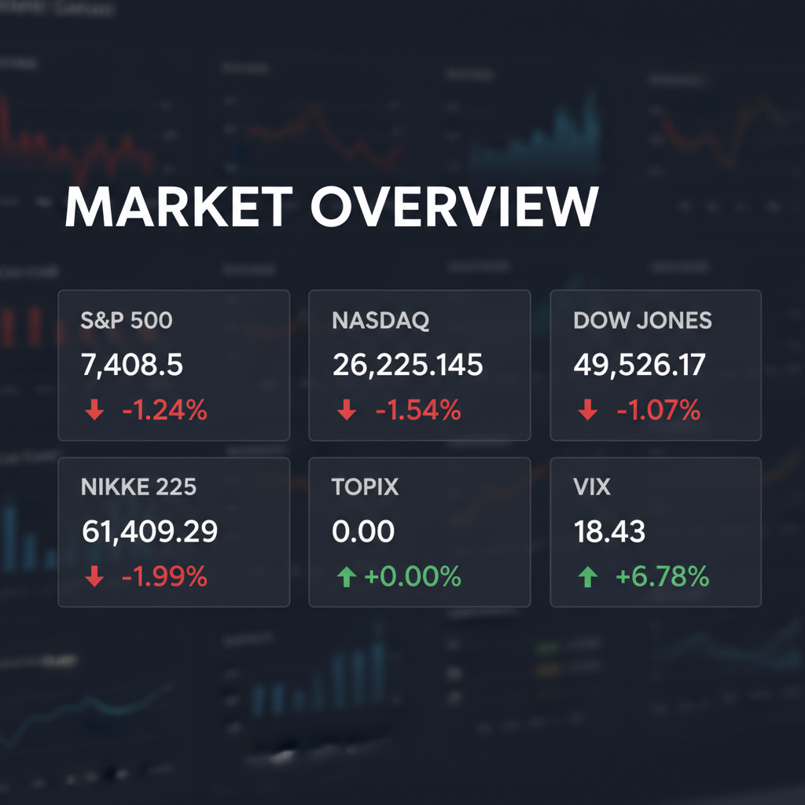

Daily Investment Report - 2026-05-18
Generated: 2026/5/18 7:26:04


チームミーティングの議論を統合し、投資家向けの最終レポートを作成いたしました。現在の市場の不確実性を直視し、リスク管理を最優先しつつ中小型のバリュー銘柄・ヘッジ銘柄に焦点を当てた内容となっています。
1. エグゼクティブサマリー
- 米国主要指数や日経平均が大幅下落しVIXが急騰する中、AI・ハイテク株からエネルギーやディフェンシブセクターへの資金シフトが鮮明になっています。
- 中東でのドローン攻撃激化等による地政学リスクと原油高がインフレ再燃を連想させ、長期金利の高止まりに対する警戒感が市場を覆っています。
- 相場のボラティリティが急拡大する初期段階にあるため、ダウンサイドの防御（現金比率引き上げ）を最優先としつつ、強固なファンダメンタルズを持つ割安な中小型株へ資金を振り向ける局面です。
2. 注目銘柄リスト
強気（買い推奨）
- Chord Energy（CHRD） [時価総額: 約70億ドル]: エネルギー界隈のM&A活発化と原油高の恩恵を直接受け、PER約8倍かつフリーキャッシュフロー利回り10%超と、極めて高い安全マージンを有しているため。
- 奥村組（1833） [時価総額: 約1,600億円]: ゼネコンの採算改善トレンドが中堅企業にも波及しており、PBR0.9倍、配当利回り5%超と下値を支える強固な財務基盤があるため。
- インティメート・マージャー（7072） [時価総額: 約30億円]: サードパーティクッキー規制下で独自のデータプラットフォームを持ち黒字成長しており、アドテク再編の波の中で外資等によるプレミアム付きTOBの標的となる可能性が高いため。
中立（様子見）
- セーフィー（4375） / スパイダープラス（4192） [時価総額: 300億〜500億円規模]: 建設DXという強力な成長テーマに乗っているものの、現状は赤字SaaSであり、金利高止まり局面におけるバリュエーションの圧迫や資金調達リスクが懸念されるため。
- BigBear.ai（BBAI） [時価総額: 約3億ドル]: 自律型防衛・AIという巨大なTAM（獲得可能な最大市場規模）は魅力的ですが、ボラティリティが極めて高く、マクロ環境が不安定な現状では積極的なエントリータイミングではないため。
弱気（警戒）
- ニデック（6594） [時価総額: 約3.8兆円]: 創業者のガバナンス問題やEV市場の成長鈍化を背景に、過去の高成長期に付与された高PERが持続できず、「バリュートラップ（割安に見えて株価下落が続く状態）」に陥るリスクが高いため。
- 高PERの消費財・中小型SaaS全般 [時価総額: 500億円以下中心]: 一般消費者の財布の紐が固くなる中、価格転嫁力を持たない企業や、高金利下で有利子負債への依存度が高い（インタレスト・カバレッジ・レシオが低い）企業は、業績悪化リスクが極めて高いため。
3. セクター推奨ランキング
中東の地政学リスク（UAE原発へのドローン攻撃等）に対する最も強力なヘッジとして機能し、NextEraの660億ドル規模のM&A報道が示す通り、業界再編のカタリストが豊富であるため。
価格転嫁の進展による採算改善で最高益が見込まれており、マクロの地政学リスクから切り離された独自のファンダメンタルズと高配当・低PBRの防御力を備えているため。
インフレ懸念に伴う長期金利の上昇・高止まり局面において利ざやの改善が期待でき、全体相場が下落する中でも相対的な耐性を示しているため。
AIブームによる長期的な成長性は疑いないものの、市場の期待値（バリュエーション）が極限まで高まっており、決算発表時のわずかなミスで急落する「出尽くしリスク」が大きいため。
金利敏感セクターの筆頭であり、インフレ長期化による資金調達コストの増大がキャッシュフローを直撃するため、当面は資金流出が継続する公算が大きいため。
4. 今週の注目イベント
- 今週予定: Nvidia（エヌビディア）の決算発表（市場全体のトレンドを左右する最重要イベント）
- 今週予定: Google（グーグル）の開発者会議（AI関連のモメンタム維持の試金石）
- 今週予定: Walmart（ウォルマート）の決算発表（米国の実体経済・個人消費動向の確認）
5. リスク要因
- AIバブルの崩壊（Nvidiaショック）: Nvidiaの決算ガイダンスが市場の完璧な期待をわずかにでも下回った場合、出尽くし感からハイテク株全体の連鎖的なパニック売りが発動するリスク。
- 中東発のスタグフレーション・ショック: サウジアラビアやUAEへのドローン攻撃が激化し、エネルギー供給網が致命的な打撃を受けることで原油価格が急騰し、インフレ再燃と景気後退が同時に襲いかかるリスク。
- クレジット・イベントの発生: インフレ長期化により各国の長期金利が高止まりし、中小型グロース株や建設・不動産セクターの資金調達コストが急増することで、デフォルト（債務不履行）懸念が連鎖するリスク。
- テクニカルな底割れとVIXの急騰: VIX指数が危険水域である20を突破した場合、アルゴリズム取引による機械的な売りが加速し、日経平均やNASDAQが主要な下値支持線を窓を開けて割り込むリスク。
6. アクションアイテム
- 現金比率の抜本的な引き上げ: テクノロジー株や半導体関連の利益確定売りを直ちに行い、ポートフォリオの現金比率を通常の2〜3倍（最低50%）に引き上げてください。
- ダウンサイド・プロテクションの構築: VIXコールオプションやS&P500のプットオプション（またはプット・スプレッド）を購入し、相場の20%程度の下落に耐えうる保険をかけてください。
- 厳格なストップロスの設定: すべての既存保有銘柄に対し、直近安値の少し下（-3%〜-5%目安）に逆指値注文を入れ、突発的なニュースフローによる致命傷を自動的に防いでください。
- 新規エントリー（押し目買い）の即時停止: テンバガー候補等の成長株であっても、日足チャートでの長い下ヒゲや明確な底打ちシグナルが確認できるまでは「落ちてくるナイフ」を掴む打診買いを控えてください。
- ヘッジ枠としてのバリュー銘柄への一部資金シフト: 現金化した余力の一部を、地政学リスクの純粋なヘッジとなるエネルギー中小型株（CHRD等）や、金利上昇に強い内需バリューの建設株（奥村組等）へ戦略的に配分してください。